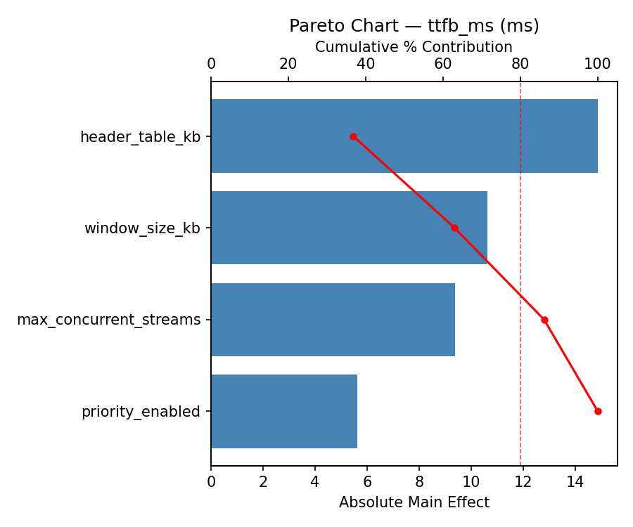
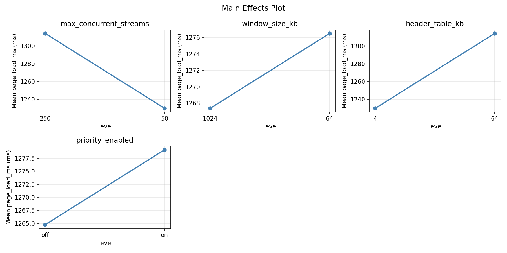
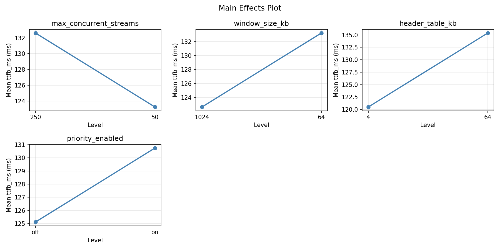
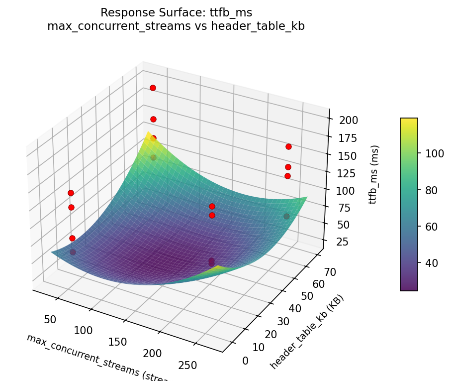

Experimental Setup
Factors
| Factor | Low | High | Unit |
|---|---|---|---|
max_concurrent_streams | 50 | 250 | streams |
window_size_kb | 64 | 1024 | KB |
header_table_kb | 4 | 64 | KB |
priority_enabled | off | on |
Fixed: tls = 1.3, server = nginx
Responses
| Response | Direction | Unit |
|---|---|---|
page_load_ms | ↓ minimize | ms |
ttfb_ms | ↓ minimize | ms |
Configuration
use_cases/54_http2_stream_multiplexing/config.json
{
"metadata": {
"name": "HTTP/2 Stream Multiplexing",
"description": "Full factorial of max concurrent streams, window size, header table size, and priority for page load time"
},
"factors": [
{
"name": "max_concurrent_streams",
"levels": [
"50",
"250"
],
"type": "continuous",
"unit": "streams"
},
{
"name": "window_size_kb",
"levels": [
"64",
"1024"
],
"type": "continuous",
"unit": "KB"
},
{
"name": "header_table_kb",
"levels": [
"4",
"64"
],
"type": "continuous",
"unit": "KB"
},
{
"name": "priority_enabled",
"levels": [
"off",
"on"
],
"type": "categorical",
"unit": ""
}
],
"fixed_factors": {
"tls": "1.3",
"server": "nginx"
},
"responses": [
{
"name": "page_load_ms",
"optimize": "minimize",
"unit": "ms"
},
{
"name": "ttfb_ms",
"optimize": "minimize",
"unit": "ms"
}
],
"settings": {
"operation": "full_factorial",
"test_script": "use_cases/54_http2_stream_multiplexing/sim.sh"
}
}
Step-by-Step Workflow
1
Preview the design
Terminal
$ python doe.py info --config use_cases/54_http2_stream_multiplexing/config.json
2
Generate the runner script
Terminal
$ python doe.py generate --config use_cases/54_http2_stream_multiplexing/config.json \
--output use_cases/54_http2_stream_multiplexing/results/run.sh --seed 42
3
Execute the experiments
Terminal
$ bash use_cases/54_http2_stream_multiplexing/results/run.sh
4
Analyze results
Terminal
$ python doe.py analyze --config use_cases/54_http2_stream_multiplexing/config.json
5
Get optimization recommendations
Terminal
$ python doe.py optimize --config use_cases/54_http2_stream_multiplexing/config.json
6
Generate the HTML report
Terminal
$ python doe.py report --config use_cases/54_http2_stream_multiplexing/config.json \
--output use_cases/54_http2_stream_multiplexing/results/report.html
Features Exercised
| Feature | Value |
|---|---|
| Design type | full_factorial |
| Factor types | categorical, continuous |
| Arg style | double-dash |
| Responses | 2 (page_load_ms ↓, ttfb_ms ↓) |
| Total runs | 16 |
Analysis Results
Generated from actual experiment runs using the DOE Helper Tool.
Pareto Charts
pareto page load ms

pareto ttfb ms

Main Effects
main effects page load ms

main effects ttfb ms

Response Surfaces
rsm page load ms max concurrent streams vs header table kb

rsm page load ms max concurrent streams vs window size kb

rsm page load ms window size kb vs header table kb

rsm ttfb ms max concurrent streams vs header table kb

rsm ttfb ms max concurrent streams vs window size kb

rsm ttfb ms window size kb vs header table kb

Full Analysis Output
doe analyze
=== Main Effects: page_load_ms ===
Factor Effect Std Error % Contribution
--------------------------------------------------------------
max_concurrent_streams -324.3750 76.0311 52.4%
priority_enabled -188.8750 76.0311 30.5%
header_table_kb -77.6250 76.0311 12.5%
window_size_kb -28.3750 76.0311 4.6%
=== Interaction Effects: page_load_ms ===
Factor A Factor B Interaction % Contribution
------------------------------------------------------------------------
max_concurrent_streams priority_enabled 185.8750 43.5%
window_size_kb header_table_kb -79.3750 18.6%
window_size_kb priority_enabled -62.1250 14.5%
max_concurrent_streams window_size_kb -46.6250 10.9%
header_table_kb priority_enabled 28.6250 6.7%
max_concurrent_streams header_table_kb -24.8750 5.8%
=== Summary Statistics: page_load_ms ===
max_concurrent_streams:
Level N Mean Std Min Max
------------------------------------------------------------
250 8 1434.1250 269.9108 1149.0000 1809.0000
50 8 1109.7500 255.3802 768.0000 1502.0000
window_size_kb:
Level N Mean Std Min Max
------------------------------------------------------------
1024 8 1286.1250 320.1149 768.0000 1693.0000
64 8 1257.7500 308.6462 903.0000 1809.0000
header_table_kb:
Level N Mean Std Min Max
------------------------------------------------------------
4 8 1310.7500 357.2877 768.0000 1809.0000
64 8 1233.1250 259.0336 903.0000 1680.0000
priority_enabled:
Level N Mean Std Min Max
------------------------------------------------------------
off 8 1366.3750 359.0030 768.0000 1809.0000
on 8 1177.5000 221.1967 903.0000 1502.0000
=== Main Effects: ttfb_ms ===
Factor Effect Std Error % Contribution
--------------------------------------------------------------
max_concurrent_streams -38.6250 10.2158 51.5%
priority_enabled -18.6250 10.2158 24.8%
header_table_kb -10.3750 10.2158 13.8%
window_size_kb -7.3750 10.2158 9.8%
=== Interaction Effects: ttfb_ms ===
Factor A Factor B Interaction % Contribution
------------------------------------------------------------------------
max_concurrent_streams priority_enabled 39.3750 46.9%
window_size_kb priority_enabled -15.8750 18.9%
max_concurrent_streams window_size_kb -13.3750 15.9%
header_table_kb priority_enabled 6.6250 7.9%
window_size_kb header_table_kb -5.6250 6.7%
max_concurrent_streams header_table_kb 3.1250 3.7%
=== Summary Statistics: ttfb_ms ===
max_concurrent_streams:
Level N Mean Std Min Max
------------------------------------------------------------
250 8 147.2500 35.5397 99.0000 200.0000
50 8 108.6250 38.2433 59.0000 168.0000
window_size_kb:
Level N Mean Std Min Max
------------------------------------------------------------
1024 8 131.6250 40.7359 59.0000 181.0000
64 8 124.2500 43.4470 68.0000 200.0000
header_table_kb:
Level N Mean Std Min Max
------------------------------------------------------------
4 8 133.1250 49.5852 59.0000 200.0000
64 8 122.7500 32.5258 68.0000 169.0000
priority_enabled:
Level N Mean Std Min Max
------------------------------------------------------------
off 8 137.2500 51.1713 59.0000 200.0000
on 8 118.6250 27.5937 79.0000 168.0000
Optimization Recommendations
doe optimize
=== Optimization: page_load_ms ===
Direction: minimize
Best observed run: #12
max_concurrent_streams = 250
window_size_kb = 64
header_table_kb = 4
priority_enabled = on
Value: 768.0
RSM Model (linear, R² = 0.4982, Adj R² = 0.3157):
Coefficients:
intercept +1271.9375
max_concurrent_streams -4.8125
window_size_kb +168.6875
header_table_kb -28.4375
priority_enabled -117.9375
RSM Model (quadratic, R² = 0.8917, Adj R² = -0.6244):
Coefficients:
intercept +254.3875
max_concurrent_streams -4.8125
window_size_kb +168.6875
header_table_kb -28.4375
priority_enabled -117.9375
max_concurrent_streams*window_size_kb -69.3125
max_concurrent_streams*header_table_kb +88.8125
max_concurrent_streams*priority_enabled -99.1875
window_size_kb*header_table_kb -106.9375
window_size_kb*priority_enabled +4.3125
header_table_kb*priority_enabled -11.8125
max_concurrent_streams^2 +254.3875
window_size_kb^2 +254.3875
header_table_kb^2 +254.3875
priority_enabled^2 +254.3875
Curvature analysis:
max_concurrent_streams coef=+254.3875 convex (has a minimum)
priority_enabled coef=+254.3875 convex (has a minimum)
window_size_kb coef=+254.3875 convex (has a minimum)
header_table_kb coef=+254.3875 convex (has a minimum)
Notable interactions:
window_size_kb*header_table_kb coef=-106.9375 (antagonistic)
max_concurrent_streams*priority_enabled coef=-99.1875 (antagonistic)
max_concurrent_streams*header_table_kb coef=+88.8125 (synergistic)
max_concurrent_streams*window_size_kb coef=-69.3125 (antagonistic)
header_table_kb*priority_enabled coef=-11.8125 (antagonistic)
window_size_kb*priority_enabled coef=+4.3125 (synergistic)
Predicted optimum (from linear model):
max_concurrent_streams = 50
window_size_kb = 1024
header_table_kb = 4
priority_enabled = off
Predicted value: 1591.8125
Model quality: Weak fit — consider adding center points or using a different design.
Factor importance:
1. window_size_kb (effect: -337.4, contribution: 52.7%)
2. priority_enabled (effect: -235.9, contribution: 36.9%)
3. header_table_kb (effect: -56.9, contribution: 8.9%)
4. max_concurrent_streams (effect: 9.6, contribution: 1.5%)
=== Optimization: ttfb_ms ===
Direction: minimize
Best observed run: #12
max_concurrent_streams = 250
window_size_kb = 64
header_table_kb = 4
priority_enabled = on
Value: 59.0
RSM Model (linear, R² = 0.5141, Adj R² = 0.3374):
Coefficients:
intercept +127.9375
max_concurrent_streams -3.0625
window_size_kb +21.0625
header_table_kb -3.4375
priority_enabled -18.4375
RSM Model (quadratic, R² = 0.7953, Adj R² = -2.0712):
Coefficients:
intercept +25.5875
max_concurrent_streams -3.0625
window_size_kb +21.0625
header_table_kb -3.4375
priority_enabled -18.4375
max_concurrent_streams*window_size_kb -3.6875
max_concurrent_streams*header_table_kb +9.3125
max_concurrent_streams*priority_enabled -6.4375
window_size_kb*header_table_kb -16.3125
window_size_kb*priority_enabled +4.9375
header_table_kb*priority_enabled -2.8125
max_concurrent_streams^2 +25.5875
window_size_kb^2 +25.5875
header_table_kb^2 +25.5875
priority_enabled^2 +25.5875
Curvature analysis:
max_concurrent_streams coef=+25.5875 convex (has a minimum)
window_size_kb coef=+25.5875 convex (has a minimum)
header_table_kb coef=+25.5875 convex (has a minimum)
priority_enabled coef=+25.5875 convex (has a minimum)
Notable interactions:
window_size_kb*header_table_kb coef=-16.3125 (antagonistic)
max_concurrent_streams*header_table_kb coef=+9.3125 (synergistic)
max_concurrent_streams*priority_enabled coef=-6.4375 (antagonistic)
window_size_kb*priority_enabled coef=+4.9375 (synergistic)
max_concurrent_streams*window_size_kb coef=-3.6875 (antagonistic)
header_table_kb*priority_enabled coef=-2.8125 (antagonistic)
Predicted optimum (from linear model):
max_concurrent_streams = 50
window_size_kb = 1024
header_table_kb = 4
priority_enabled = off
Predicted value: 173.9375
Model quality: Moderate fit — use predictions directionally, not precisely.
Factor importance:
1. window_size_kb (effect: -42.1, contribution: 45.8%)
2. priority_enabled (effect: -36.9, contribution: 40.1%)
3. header_table_kb (effect: -6.9, contribution: 7.5%)
4. max_concurrent_streams (effect: 6.1, contribution: 6.7%)